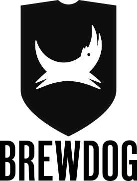
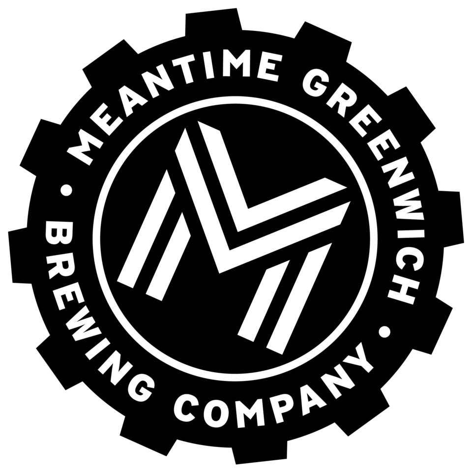

영국 맥주 브랜드 19
영국에서 시작된 맥주 브랜드 19개를 로고와 함께 정리했습니다. 대표적인 영국 맥주 브랜드로는 스콜(Skol), 기네스(Guinness), 브루독(BrewDog), Brakspear Brewery, Castle Rock Brewery, Greene King 등이 있습니다. 기원 국가는 검수된 브랜드 설명이나 위키데이터 개체에서 확인된 값만 씁니다.
다른 나라 맥주 브랜드
맥주 브랜드 전체 →설립연도가 확인된 브랜드는 15개이며 가장 오래된 곳은 1843년, 가장 최근은 2007년에 시작했습니다. 시기별로는 1900년 이전 7개, 1950~1999년 5개, 2000년 이후 3개입니다. 수록 자료로는 로고 이미지 19개를 갖췄습니다. 이 가운데 19개는 공식 웹사이트가 일치하는 위키데이터 개체로 연결해 두었습니다.
영국 맥주 브랜드 한눈에 보기
- 스콜(Skol) — 스콜(Skol)은 스코틀랜드에서 처음 양조된 국제적인 라거 맥주 브랜드이다.
- 기네스(Guinness) — 기네스(Guinness)는 18세기 아일랜드 더블린의 세인트 제임스 게이트 양조장에서 아서 기니스가 시작한 스타우트 맥주 브랜드이다.
- 브루독(BrewDog) — 브루독(BrewDog)은 스코틀랜드 엘런에 본사를 둔 다국적 양조장 및 펍 체인이다.
- Brakspear Brewery — Brakspear Brewery는 영국 옥스퍼드셔 헨리온템스에 있던 양조장이다.
- Castle Rock Brewery — Castle Rock Brewery는 영국 노팅엄에 본사를 둔 양조장이자 펍 그룹이다.
- Greene King — Greene King은 1799년에 설립된 영국의 펍·양조 기업이다.
- Brains Brewery — Brains Brewery는 1882년 Samuel Arthur Brain이 설립한 웨일스 카디프 기반의 지역 양조장이다.
- Caledonian Brewery — Caledonian Brewery는 1869년 스코틀랜드 에든버러의 Shandon 지역에서 설립된 양조장이다.
- John Smith's Brewery — John Smith's Brewery는 영국 노스요크셔 테드캐스터에 있는 양조장이다.
- Black Sheep Brewery — Black Sheep Brewery는 영국 North Yorkshire의 Masham에 있는 양조장이다.
- Batemans Brewery — Batemans Brewery는 영국 Lincolnshire의 Wainfleet, Salem Bridge Brewery에 본사를 둔 양조장이다.
- Joseph Holt's Brewery — Joseph Holt's Brewery는 영국 맨체스터에 본사를 둔 양조장으로 1849년에 설립되었다.
영국 맥주 브랜드 목록
 스콜Skol영국 · 1959년
스콜Skol영국 · 1959년스콜(Skol)은 스코틀랜드에서 처음 양조된 국제적인 라거 맥주 브랜드이다.
 기네스Guinness영국
기네스Guinness영국기네스(Guinness)는 18세기 아일랜드 더블린의 세인트 제임스 게이트 양조장에서 아서 기니스가 시작한 스타우트 맥주 브랜드이다.

브루독BrewDog영국 · 2007년브루독(BrewDog)은 스코틀랜드 엘런에 본사를 둔 다국적 양조장 및 펍 체인이다.
 Brakspear Brewery영국 · 2002년
Brakspear Brewery영국 · 2002년Brakspear Brewery는 영국 옥스퍼드셔 헨리온템스에 있던 양조장이다.
 Castle Rock Brewery영국 · 1996년
Castle Rock Brewery영국 · 1996년Castle Rock Brewery는 영국 노팅엄에 본사를 둔 양조장이자 펍 그룹이다.
 Greene King영국
Greene King영국Greene King은 1799년에 설립된 영국의 펍·양조 기업이다.
 Brains Brewery영국 · 1882년
Brains Brewery영국 · 1882년Brains Brewery는 1882년 Samuel Arthur Brain이 설립한 웨일스 카디프 기반의 지역 양조장이다.
 Caledonian Brewery영국 · 1869년
Caledonian Brewery영국 · 1869년Caledonian Brewery는 1869년 스코틀랜드 에든버러의 Shandon 지역에서 설립된 양조장이다.
 John Smith's Brewery영국 · 1852년
John Smith's Brewery영국 · 1852년John Smith's Brewery는 영국 노스요크셔 테드캐스터에 있는 양조장이다.
 Black Sheep Brewery영국 · 1991년
Black Sheep Brewery영국 · 1991년Black Sheep Brewery는 영국 North Yorkshire의 Masham에 있는 양조장이다.
 Batemans Brewery영국 · 1874년
Batemans Brewery영국 · 1874년Batemans Brewery는 영국 Lincolnshire의 Wainfleet, Salem Bridge Brewery에 본사를 둔 양조장이다.
 Joseph Holt's Brewery영국 · 1849년
Joseph Holt's Brewery영국 · 1849년Joseph Holt's Brewery는 영국 맨체스터에 본사를 둔 양조장으로 1849년에 설립되었다.

Meantime Brewery영국 · 1999년Meantime Brewery는 영국 런던 그리니치에 본사를 두었던 맥주 양조 회사이다.
 Campaign for Real Ale영국 · 1971년
Campaign for Real Ale영국 · 1971년Campaign for Real Ale은 리얼 에일, 사이더, 페리와 전통적인 영국 펍·클럽을 홍보하는 독립적인 자발적 소비자 조직이다.
 Samuel Smith Old Brewery영국
Samuel Smith Old Brewery영국Samuel Smith Old Brewery는 1758년에 설립된 잉글랜드의 가족 소유 독립 양조장이자 펍·호텔 운영사이다.
 Innis & Gunn영국 · 2002년
Innis & Gunn영국 · 2002년Innis & Gunn은 영국 스코틀랜드 에든버러에 본사를 둔 양조회사이다.
 Arkell's Brewery영국 · 1843년
Arkell's Brewery영국 · 1843년Arkell's Brewery는 영국 스윈던에 본사를 둔 양조장이다.
 Harvey's Brewery영국
Harvey's Brewery영국Harvey's Brewery는 잉글랜드 이스트 서식스의 루이스에 있는 양조장이다.
 Wrexham Lager영국 · 1881년
Wrexham Lager영국 · 1881년Wrexham Lager는 영국 웨일스 북동부 렉섬에서 양조되는 라거 맥주 브랜드이다.